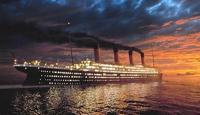

ტიტანიკი
ტიტანიკი იყო ბრიტანული სამგზავრო და ფოსტის გადამზიდავი ოკეანის ლაინერი, რომელსაც მართავდა White Star Line. ტიტანიკი იყო ყველაზე დიდი ხომალდი, რომელიც მცურავი იყო იმ დროს. იგი აშენდა ჰარლანდი და ვოლფის გემთმშენებელი კომპანიის მიერ ბელფასტში.
 ტიტანიკის მრავალფუნქციური სტრუქტურა